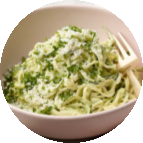
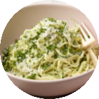

How to Make Avocado Alfredo with Zucchini Noodles
Traditional alfredo sauce is a decadent dish made with lots of cream and butter. This lighter version gets its creaminess from avocado, which is full of heart-healthy monounsaturated fatty acids (instead of saturated fat found in cream and butter). It also adds lots of fiber to a dish that typically has none. For a low carb meal, we toss the sauce with zucchini noodles instead of regular pasta. You can spiralize your own zucchini with a special tool, or make ribbons with a vegetable peeler. You can also check the produce aisle or the freezer aisle for spiralized zucchini.
10 min prep time | 30 servings | 1 cookie per serving
Step-by-Step Instructions:
1. In a blender or food processor, puree the avocado flesh with 2 tbsp of the parmesan cheese, lemon juice, salt, and pepper.
2. Heat the oil in a large skillet or wok over medium heat. Add the garlic and sauté until fragrant, about 30 seconds. Add the zucchini noodles and sauté, stirring frequently, until crisp-tender, about 3 minutes.
3. Remove the skillet from the heat, then add the avocado puree. Mix with tongs to coat the zucchini noodles and warm the avocado sauce.
4. Serve immediately. Top each serving with the remaining cheese and parsley.